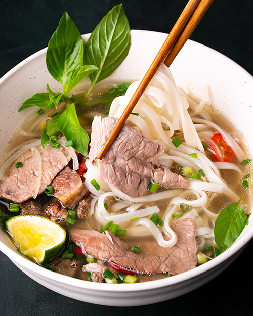

Recipe Pho

Description
Pho is a popular Vietnamese dish savory and delicious. It is
made primarily with beef broth and rice noodles.
Ingredients
- Marrow bones and Meaty bones
- Thinly sliced raw meat
- Yellow onions
- Basil
- Salt
- Fish sauce
- Sugar
Steps
- Boil meat in a pot for 5 minutes
- skim out the impurities on top of pot
- add noodles to pot
- simmer for 3 hours bones,beef,water,salt,fish sause, and yellow onions
- strain pot into bowl
- serve!